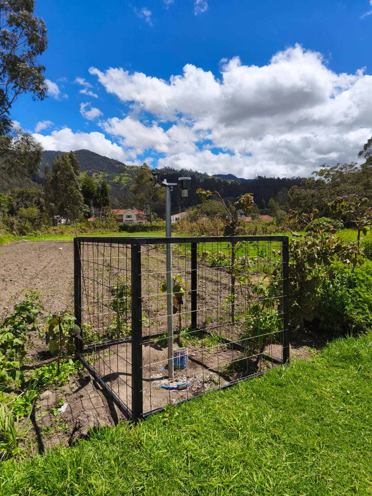

Cargando…
Ubicación
Coordenadas: -2.89830, -79.06141

Temperatura (°C)
Cargando…
Pronóstico diario de temperatura
Cargando pronóstico de temperatura…
Humedad (%)
Cargando…
Precipitación en las 72 horas previas
Cargando…
Pronóstico de precipitación para los próximos 7 días
Cargando pronóstico de precipitación…
Viento durante la última hora
Cargando…
| Fecha | Temperatura (°C) | Humedad (%) | Punto de rocío (°C) | Sensación térmica (°C) | Velocidad del viento (m/s) | Ráfaga de viento (m/s) | Dirección del viento (°) | Presión atmosférica absoluta (hPa) | Intensidad de precipitación (mm/h) | Precipitación por intervalo (mm) | Radiación solar (W/m²) | Índice UV |
|---|
Cargando datos históricos…